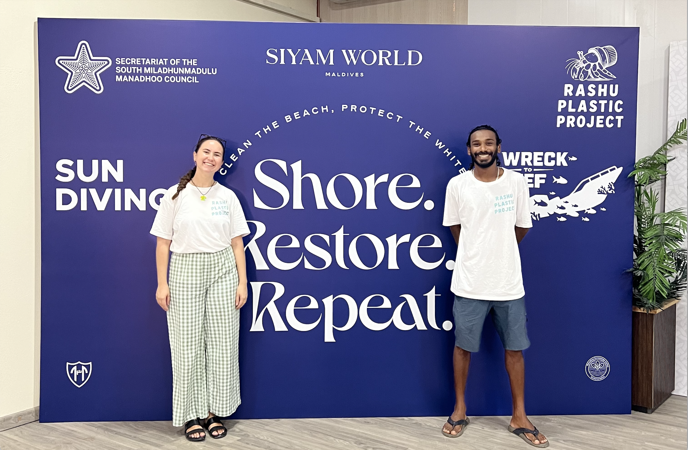
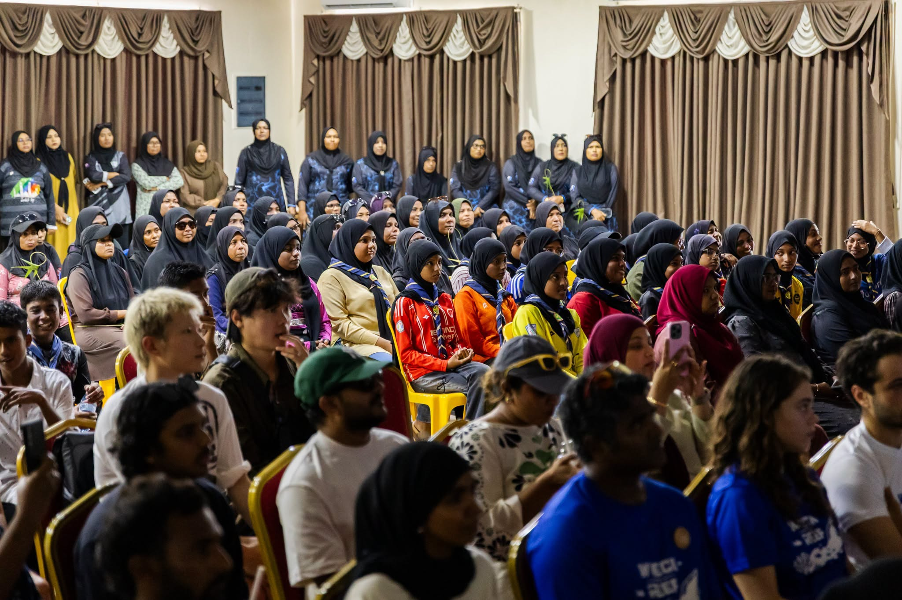
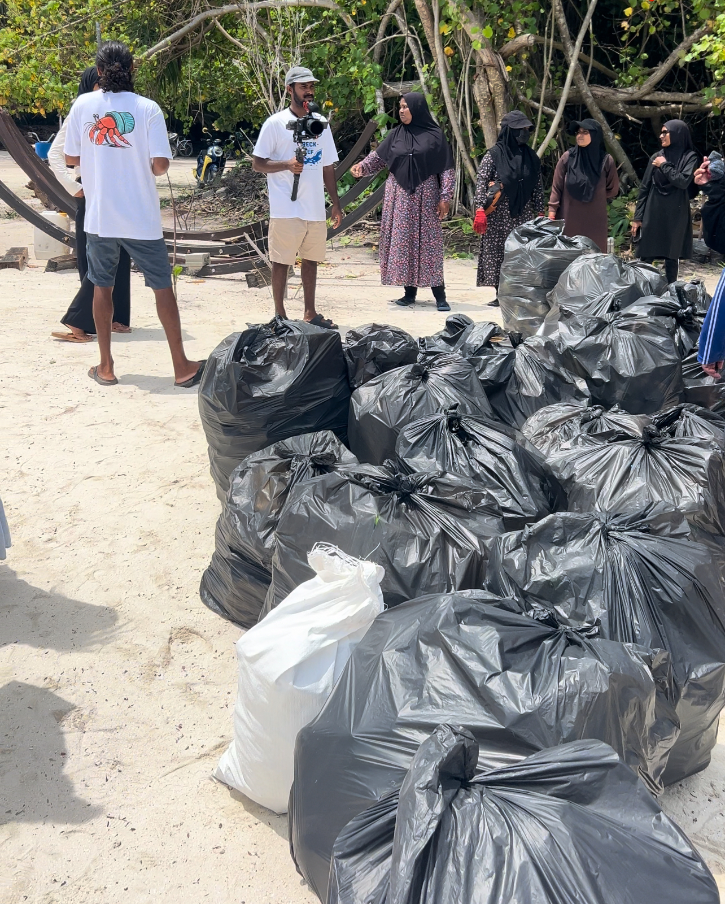
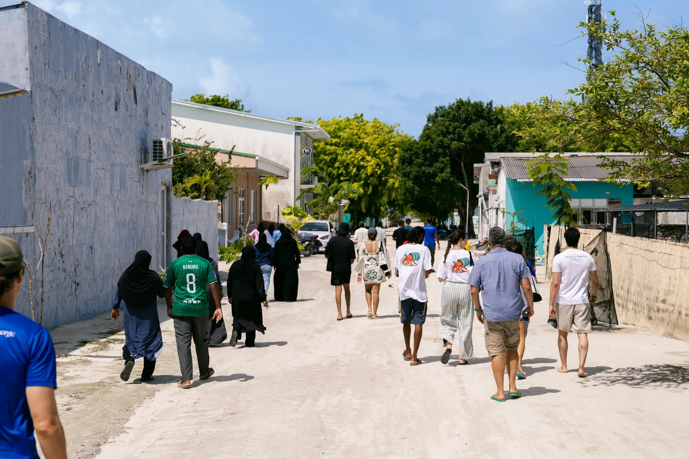

As part of our participation in the Wreck to Reef programme, Rashu Plastic Project had the privilege of visiting the island of Manadhoo to host a community cleanup and educational session focused on plastic pollution, recycling, and environmental stewardship.
Community at the Centre
Community engagement has always been at the centre of our work. While recycling technologies and innovative products are important, lasting environmental change begins with awareness, education, and collective action. Our visit to Manadhoo was an opportunity to connect directly with community members and share practical ways that individuals can help reduce waste and protect the environment.
Learning Together
To begin the day we hosted an educational session focused on the lifecycle of plastic, the impacts of marine pollution, and the importance of reducing, reusing, and recycling materials whenever possible. Participants learned how plastic waste affects marine ecosystems, threatens wildlife, and can eventually impact communities that depend on healthy oceans for their livelihoods.

Taking Action Together
Afterwards there was a community cleanup, bringing together participants who volunteered their time to remove litter from the island's environment. Throughout the cleanup, we collected and documented various types of waste. While cleanups help restore natural spaces, they also provide an important opportunity to understand the sources of waste and discuss long-term solutions. Every piece of litter collected tells a story about consumption, disposal habits, and the need for stronger waste management practices.


Volunteers coming together to restore natural spaces
Waste Can Have Value
We also shared the story of Rashu Plastic Project and demonstrated how collected plastic waste can be transformed into useful products. By showcasing recycled items made from locally sourced plastic, we aimed to illustrate that waste can have value when managed responsibly.

Enthusiasm and Engagement
One of the most rewarding aspects of the session was the enthusiasm and engagement from participants. The discussions that followed highlighted a growing interest in sustainability and a willingness among community members to explore new ways of reducing waste.
Events like these remind us that environmental solutions are strongest when communities are actively involved.
Real change happens when people understand the issues, feel connected to the solutions, and are empowered to take action within their own communities.